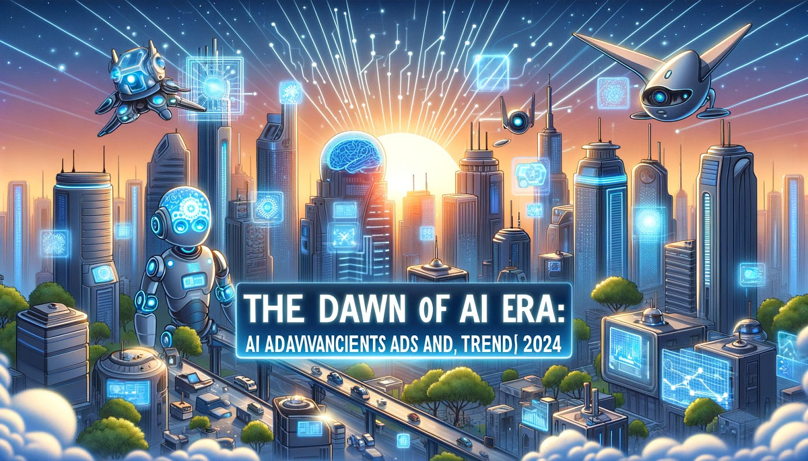

Automation
AI supports repetitive tasks in offices, factories, online services and customer support systems.
Are we finished, or are we entering a smarter human-technology partnership?
Artificial Intelligence is changing learning, work, business, creativity and communication.
Artificial Intelligence (AI) is the development of computer systems that can perform tasks normally associated with human intelligence. These tasks include learning from data, recognising images, understanding language, planning, solving problems and generating new content.
The question in this website is: Are we finished? The answer is no. AI can perform many tasks quickly, but humans are still needed for judgement, responsibility, ethics, creativity and emotional intelligence. AI should be understood as a powerful tool that helps people work better, not as a complete replacement for people.
This highlighted sentence demonstrates inline CSS while still using hexadecimal colour values.
AI can process information at speed, but people decide what problems are worth solving.

AI supports repetitive tasks in offices, factories, online services and customer support systems.

Future AI works best when people use it as an assistant for thinking, research and design.

Generative AI can help create images, text, music and code, but human review remains important.
UTF-8 symbols: © ® ™ ★ ♥ →
This video is included as extra multimedia support. It helps explain AI concepts visually.